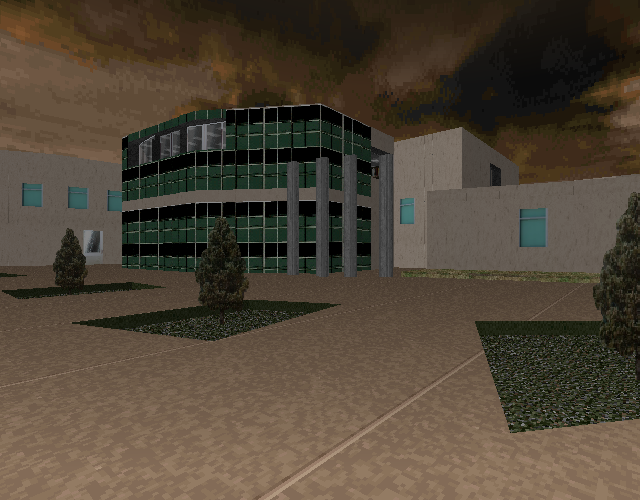
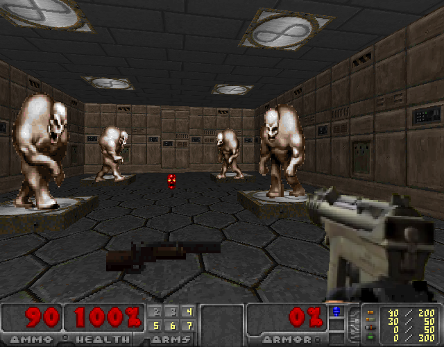

<!DOCTYPE html>
<html>
<title>Doom: Version Columbine Massacre | Doom: Rediscovering History</title>
	<meta charset="utf-8">
	<meta content="OWLY.FANS" property="og:title" />
	<meta content="Because Sometimes Doom is just bad" property="og:description" />
	<meta property="og:image" content="https://owly.fans/floppy.png">
	<meta content="#9B4F96" data-react-helmet="true" name="theme-color" />
    <meta name="keywords" content="owly, cass python, neocities, neozones, brit, uk, archive, site ran by a stud, england, wales">
	<link rel="shortcut icon" type="image/x-icon" href="../../../favicon.ico">
    <link rel="stylesheet" href="../../style.css">
    </html>
	    <body><p><a href="../">Back to index</a></p>
		<h1>Doom: Version Columbine Massacre</h1>
			<p></p>
			<hr>
			<p><div class="tag">

<h3>Content Warning</h3>
<p>This article will talk about the <a href="https://en.wikipedia.org/wiki/Columbine_High_School_massacre">1999 Columbine High School massacre</a> and a Doom mod that was inspired by the event. If you don't like the sound of that, please click off.</p>
			<p>As well as this, some use of vulgarity is used here.</p>
			
			</div>

										<p><div class="tag">

<h3>Text Disclaimer</h3>
		<p>While the thoughts and opinions are all mine, I want to make it clear that I used ChatGPT to help me give suggestions and improve things like spelling (I have dyslexia) and the flow of the text. In other words, I used AI as an aid to help me fill in the gaps in my work.</p>
			</div><p></p>
			<em>Cass &#xAB;Owly&#xBB; Python, 2024-06-25</em>

			<p><figure>
        <center><a href="columbinedoom2_full.png"></a></center>
				<figcaption><p>The spawning area of the map is <a href="https://en.wikipedia.org/wiki/Columbine_High_School">Columbine High School</a>. This map, which we could only credit to anon, allows the player to control either Eric Harris or Dylan Klebold, who caused the deadliest mass shooting at a high school in U.S. history.</p>
		</figcaption>
		</figure></p>

<p>You spawn in the map inside of a car parking lot, already with gun in hand, you are next to the real-life Columbine High School. People are running as you start to gun down these virtual school-goes, their screams echoing across the map. You go inside of the school, it's a whole recreation of the building, including a computer lab, a mess hall, and classrooms that have all been uniquely decorated. You have just been playing <strong>Doom: Version Columbine Massacre</strong>.</p>

<p>Due to this being the way things are in life, it should not be all <em>that</em> shocking that someone made a mod in a game where you can commit a school shooting, in the case of Doom: Version Columbine Massacre, but we're jumping ahead. Not so long ago, we <a href="../006">took a look at U.A.C. <yell>Labs</yell></a>, the 1996 Doom WAD made by Eric «Reb» Harris, who only three years later, would commit one of the most brutal attacks on a school, along with his friend and co-killer, Dylan &#xAB;Vo<yell>da</yell>a&#xBB; Klebold. As well as this, we talked about the ripple effects that were caused by not only the tragic event, but also people who have since taken inspiration from the two boys.</p>

<p>When talking in my first review back in March, I said that there were a few people in the Doom community who have been openly inspired by Harris, but I was, and still am, not all that willing to cite that many examples for a good few reasons; firstly, I just do not want to be here giving an advertisement to these types of people, I do not like Columbinestannies at all. Second, despite not liking them, I also don't want to be the reason why they might be harassed when I talk about what they have made, but <em>Doom: Version Columbine Massacre</em> is different as the creator is unknown. In my mind, I will only be talking about the mod itself and not shining a spotlight on the creator.</p>

				<p><figure>
        <center></center>
				<figcaption><p>The title image replacement for the mod itself shows actors Andre Keuck and Calvin Gabriel dressed up as Eric Harris and Dylan Klebold, donning their infamous t-shirts with «Wrath» and «Natural Selection» on.</p>
		</figcaption>
		</figure></p>

<p>With that said, when opening this Doom mod, the first thing that will be seen will be the title screen replacement, <a href="https://doomwiki.org/wiki/Title_screen">rather than the normal Doom II one</a>, the mod aurther opted to replace it with a photo of actors Andre Keuck and Calvin Gabriel, from <em><a href="https://letterboxd.com/film/zero-day">Zero Day</a></em>, the 2002 found footage movie that follows the events that would lead up to the attack. Before I carry on, I want to say that I don't think that the idea of a video game based upon the Columbine Massacre is a bad thing, however, and this is a <em>big</em> however, the way that this was done here is wrong. In Doom: Version Columbine Massacre, also known by its filename of <tt>ColumbineDOOM2.pk3</tt>, the player can role-play as one of the two mass murderers of the Columbine High School massacre. In a way, it glorifies the boys - you're highly encouraged to recreate the event thanks to the number of weapons used.</p>

<p>These have been a few handful of games that have been based upon real life events, but chose to not place you in the shoes of the perpetrator, rather the victim or a bystander - this mod opting to allow you to play as Harris or Klebold is why I think that this was made for the sake of trying to get a reaction from people, that is to say a negative one.</p>
	
<p>Back to the game, after you go through the title screen, you are prompted to choose who you want to be playing as; Klebold, Harris, or random. Once you've made your mind up, you are then spawned in the parking lot for the real-life <a href="https://en.wikipedia.org/wiki/Columbine_High_School">Columbine High School</a> with weapons in your hands and monsters being replaced by (what I think is) ripped game assets of people running around. It's almost impossible for you to get hurt in this mod, and in fact, the only way that you can die is if you somehow blow yourself up. You can <em>also</em> get killed when the police show up, but I doubt that anyone could be asked to play the game long enough for that even to trigger.</p>

<p>As you might expect, a game where you get to play as a real killer isn't all that enjoyable, for some reason. But if you were unsure at this point, yes, you get to kill the NPCs in this mod that also doubles up as a recreation of the school.</p>
		
<p>When it comes down to it, thinking about it... I'm not <em>really</em> sure who this was made for. The gameplay is almost not there, there's no way to really beat it (unless that's the point), and I can't really picture the average Doom fan sitting down after a long day of work and saying «Ah, time to put on my favorite Doom level, Doom: Version Columbine Massacre!». As I said, I feel like this was made for the sake of simply wanting to piss off as many people as possible, well, either that or tricking others into thinking that this was <a href="https://www.snopes.com/fact-check/the-harris-levels">made by Eric Harris</a> as it is true that he not only enjoyed Doom, but also made a handful of WADs for it as well.</p>

<p>I doubt they will announce that they made it, mostly as this was probably made on 4chan's /vr/ (retro games) board around 2014 (according to the modification dates of the files in the PK3 that say 2014-06-25). So come on, the person who made it is not going to come forward now. With that being said, if you rename <tt>Columbine<yell>Doom</yell>2.<strong>pk3</strong></tt> to <tt>Columbine<yell>Doom</yell>2.<strong>zip</strong></tt> and unextract it, you'll be able to browse the contents of the mod, being able to see the sprites used, the scripts, and, among other things, the sounds library. One voice that pops up a few times in this folder is an out-of-place Scottish voice with a crap-sounding mic - could this be the author? Perhaps, but this is just something of note. The voice shows up a good few times making a number of remarks; «Truble? You don't know what trouble is» (dylan30.wav) and «Shit, yeah!» (dylan27.wav). There are other audio clips found here as well, and I think a lot of these were never even <em>used</em>, like ones that were used within the game, such as screaming, the sounds of sirens, gun shots, but this one male Scottish voice does stand out to me a lot.</p>

			<p><figure>
        <center><audio controls src="dylan25.mp3" alt="Audio file of a Scottish voice saying the line «Give me one reason why I shouldn't kill you» into a crappy-sounding microphone." title="Audio file of a Scottish voice saying the line «Give me one reason why I shouldn't kill you» into a crappy-sounding microphone.">
</audio></center>
			<figcaption><p>One of the unused audio files from Columbine<yell>Doom</yell>2, <tt>dylan25.wav</tt>, that features an out-of-place Scottish person talking.</p>
		</figcaption>
			</figure></p>
			
			<p>There are also audio clips found here that were taken from the real-life Eric Harris and Dylan Klebold as they are making remarks to the other as they fire guns at trees, pre-massacre, as well as this, there are also gore sound effects of over-the-top gory spatters. Playing all of the sounds effects used is not that much of a chore, but I did it anyway, in total, I was able to find eight audio files (not including duplicates) by whom I think was the author speaking into their microphone:</p>

<ul>
	<li><tt>bylan2</tt>: Screaming the words &#xAB;Everybody get up! Right now!&#xBB;.</li>
	<li><tt>dylan7.wav</tt>: Calmly asking &#xAB;Do you believe in God?&#xBB;</li>
	<li><tt>dylan10.wav</tt>: &#xAB;Let's kill some cops!&#xBB;</li>
	<li><tt>dylan25.wav</tt>: Calmly saying &#xAB;Give me one reason why I shouldn't kill you&#xBB;, this file is linked on the right.</li>
	<li><tt>dylan26.wav</tt>: Asking where Eric Harris is; &#xAB;Reb..?&#xBB; (this was the online handle of Harris).</li>
	<li><tt>dylan27.wav</tt>: Saying the words &#xAB;Shit, yeah!&#xBB;.</li>
	<li><tt>dylan30.wav</tt>: Saying the words &#xAB;Truble? You don't know what trouble is&#xBB;.</li>
	<li><tt>dylan34.wav</tt>: &#xAB;Look what we have here&#xBB;</li>
</ul> 

<p>Obviously my knowledge of the creator is limited, and to be honest, I don't intend to try and trackdown whoever made this as I don't <em>really</em> care that much, also, as I said, this was made in 2014, making this Doom mod now ten years old (as this article was posted on 2024-06-25), but despite all of this, I hope whoever made this can look back on <strong>Doom: Version Columbine Massacre</strong> with regret and cringe at it and can look at themselves in the mirror, knowing that they are a better person.</p>

<p><center><strong><span aria-hidden="true">∴</span></strong></center></p>


				<p><figure>
        <center><a href="screenshot2_full.png"></a></center>
					<figcaption><p>Screenshot of the mod showing the hidden room where the player will pick up a new gun and a red skull. Shown here is it being played with <a href="https://github.com/freedoom/freedoom/releases/v0.8">Freedoom  v0.8</a> that was released around the same time.</p>
		</figcaption>
		</figure></p>

<p>One oddity that I was able to find while playing was that there seems to be another map inside of the first one. By using the IDCLIP cheat code, I was able to make my way to a seemingly hidden room that can be found in the top left of the map (I'd also use the IDDT chat to see the automap).</p>

<p>I am a little confused as to why this is here at all, but the room that you're now going to be in is, what I can only suspect, is an unfinished course. I don't think there is any other way of getting here but to cheat, but once you do, you'll be treated to a quite easy key hunting session. This part of the map is unlike the main part of the PK3 - the school textures used have now become a tech base theme, like the one seen in the first episode of Doom; there are also no more human NPCs running around to shoot. The whole thing is now a standard Doom mod.</p>

<p>Getting the first key is not difficult at all. The blue key is behind a pane of glass (glass that is untextured depending on your IWAD), once you shoot at it, voilà, you effectively have that key.</p>

<p>For the second, you need to drop down a hole into a rectangle room that is filled with four hell knights who will be unfrozen once you collect that key. Strafing is must here, so just run circles around your foes and fire on them, this shouldn't be difficult for most players, I'd imagine, especially thanks to you having a number of overpowered guns. Once all four monsters are dead, you can teleport to the starting area as a trigger will activate, lowering a section of the wall that will reveal a teleporter.</p>

<p>There's also a pod there that when a player goes into it, all of their lost health will be regained, so dying isn't anything to worry about.</p>

<p>Then, well, I'm not entirely sure what to do next. There's a box room full of... Well, boxes that I think has a key, but I couldn't find it, even though the room was very tiny, so I don't know.</p>

<p>There's also another room that is attached to the hidden section that has a giant ceiling fan that can be activated by pressing a nearby button, with text appearing on screen saying that it's turning on and a countdown.</p>

<p>This all seems very experimental to me, like someone is playing around with a Doom editor, which is fine, but the confusing bit is why is this attached to an edgy Columbine map? Well, I don't know, and I probably never will.</p>
			
<p>Regardless of who really made it or why, the question on my mind at least is «should you play this?» and um... I really don't think it's worth a look, to be honest with you all, it's just kind of crass for the sake of crass. Surface-level offensive with nothing else to really say apart from that, but I'm not going to stop you from playing it, if you must. However, I do feel like this review for it that you're reading right now is a lot more interesting than what this unknown person made. I'm sure it's not going to be all that much of a challenge for you to find a better Doom mod to play.</p>
		
			
			
			
<p></p>
	<hr>	
			
			<h3>Notes</h3>
<p><a id="ref1"></a>Note 1: I won't be linking to this Doom mod on my website, however, despite this, finding a copy of it is rather easy and I did upload it online before.</p>
			
<p><strong>Want to support OwlyFans? <a href="/nft/">See our NFTs</a>!</strong>
</p>

	
	<p>Copyright 2024 - <script type="text/javascript">
var today = new Date()
var year = today.getFullYear()
document.write(year)
</script> by Cass &#xAB;Owly&#xBB; Python, licensed under the <a href="../../../license/fopl-mdp-v2" title="The Freedom Owl Public License: Modifications, Distributions, and Private Use Version 2" alt="The Freedom Owl Public License: Modifications, Distributions, and Private Use Version 2">FOPL-MDP V.2</a>. Please see <a href="../../../humans.html">humans.html</a> for full credit and thanks. Peace and love.</p>
<p><font color="black"><center>&#x2605;</center></font></p>
<p>
<div style="text-align:right">
<a href="http://bytemoth.nfshost.com/cd5k-net/tau">&tau;</a>
</p>
</div>
<p></p>
	<script src="../../../ruffle/ruffle.js"></script>
<script src="../../../script.js"></script>
    </body>
</html>